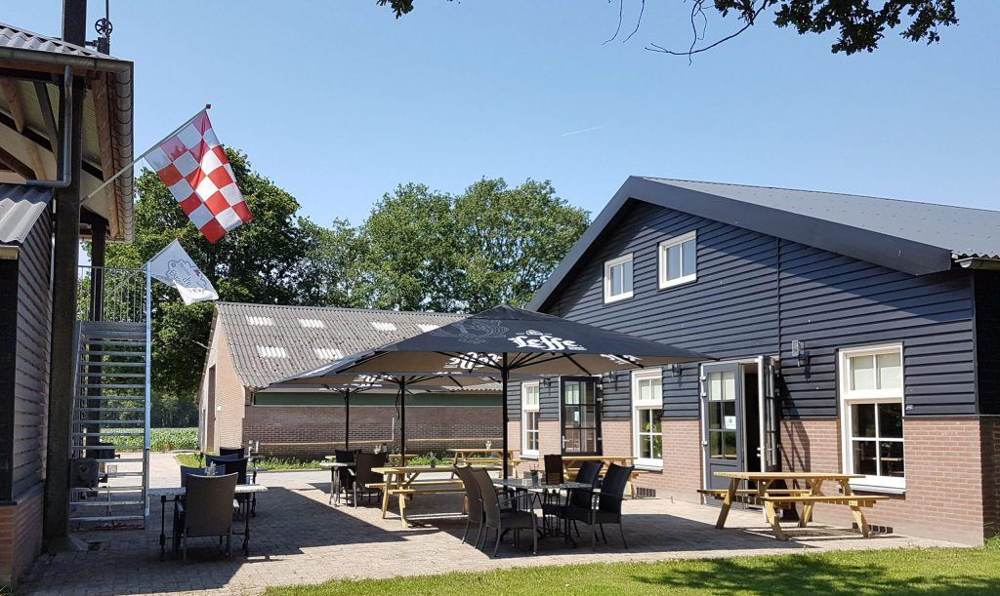
Staminee d'n Eigenwijze
Een goede kop koffie, een lunch of een borrel, op 200 meter van de Landschotse Heide in Vessem. Ideaal om uw wandeling of fietstocht te beginnen of af te sluiten.
Open vrijdag, zaterdag en zondag.
Welkom bij d'n Eigenwijze
Wij hebben een plek gemaakt voor iedereen die tijdens een wandeling of fietstocht zin heeft in een lekker bakje koffie, met eventueel iets lekkers erbij. Ook voor een vergadering, een inloopavond of een ander arrangement bent u hier op de goede plek. We hopen u graag een keer te verwelkomen!
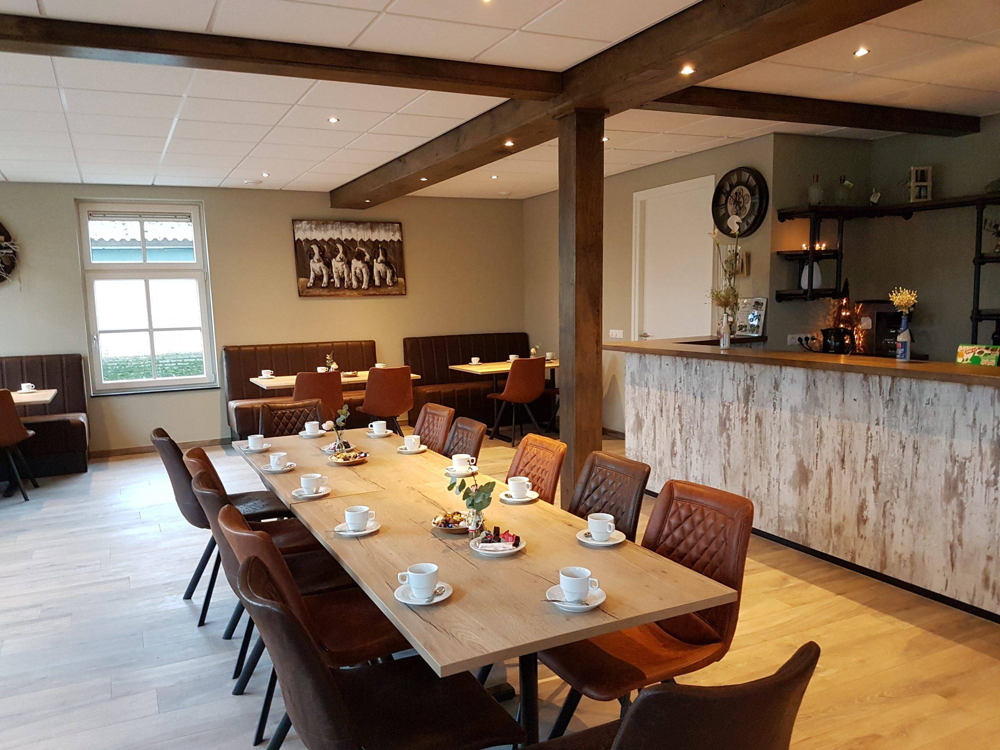
Eten & drinken
Koffie met gebak, huisgemaakte soep, broodjes, uitsmijters of gewoon een lekkere vette hap.
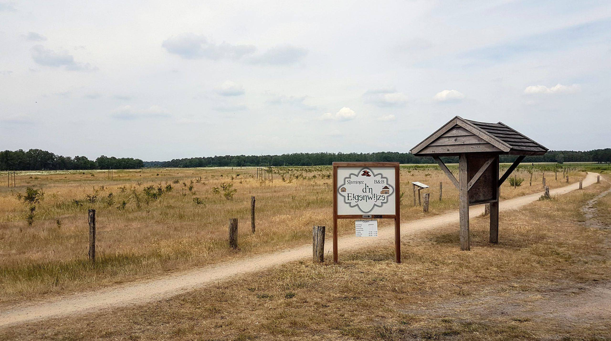
Wandelen & fietsen
De Landschotse Heide ligt op 200 meter. Een mooi beginpunt voor een wandeling of om te verzamelen voor een fietstocht.
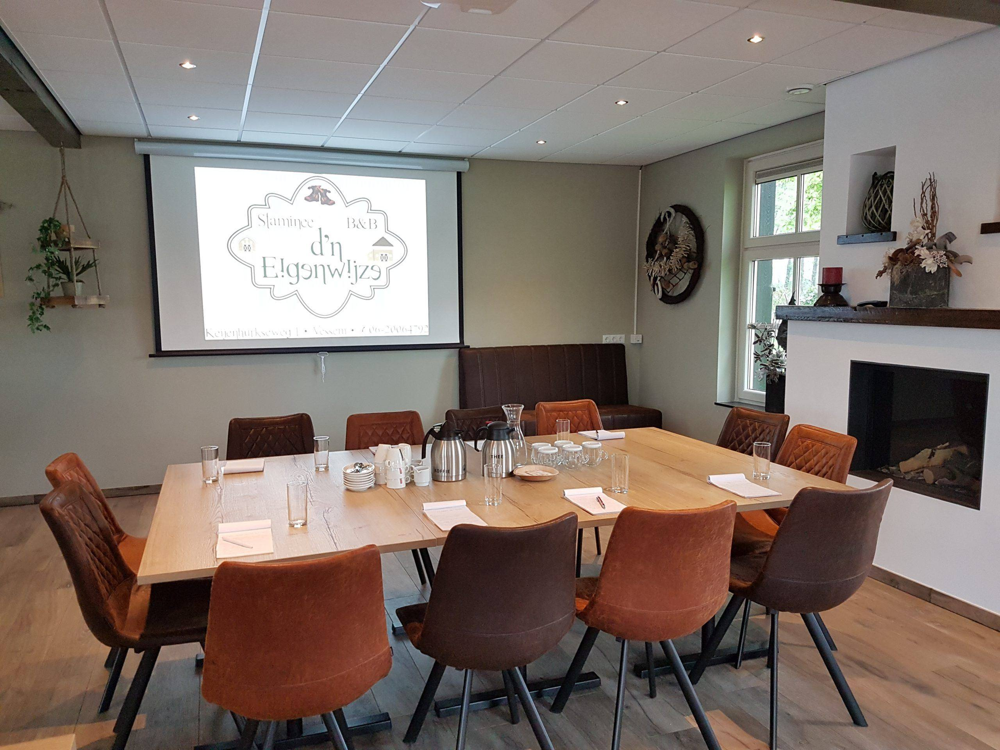
Bijeenkomsten
Vergaderingen, informatieavonden en reünies, met beamer, wifi en onbeperkt koffie en thee.
Onze kaart
In onze staminee geniet u in een rustige omgeving van een goede kop koffie met iets lekkers erbij. Of blijf voor de lunch: een wisselende huisgemaakte soep, broodjes, uitsmijters of gewoon een lekkere vette hap.
Soep
Vers, met seizoensproducten en volgens eigen recept. Met brood en boter.
- Wisselende dagsoepdagprijs
- Tomatensoep7,00
- Kleine portie4,00
Broodjes
- Worstenbroodje3,50van Beers blond broodje
- Broodje kroket of frikandel4,50
- Broodje gezond8,50waldkornbroodje met ham, kaas, komkommer, tomaat en ei
- Broodje brie, noten & honing v8,50
Uitsmijters & tosti's
- Uitsmijter10,002 sneetjes brood, 3 eieren, ham en kaas
- Uitsmijter Eigenwijs12,50met gebakken champignons, ui en spekjes
- Tosti ham & kaas6,00
- Tosti Hawaii6,50
- Croque madame8,00
Uitgebreide lunch
- 2 kroketten op 2 sneetjes brood9,00ook vegetarisch
- 12-uurtje14,00klein soepje, 2 sneetjes brood, kroket, ham, kaas en ei. Ook vegetarisch
- Leffe stoofpot met friet17,00
- Kipsaté van poelier Kapteijns16,00 · 17,00met pistolet of met friet
- Huisgemaakte paddenstoelenragout v12,00 · 16,00in een pasteitje of met friet
- Clubsandwich16,00kip, bacon, gebakken ei, tomaat, komkommer en een klein soepje
- Gebakken spek op 2 sneetjes brood12,50ovengebakken spek met salade
- Spareribschotel20,00spareribs uit de oven met friet en salade
- Eigenwijze burger18,00225 g rundvlees van Van Lieshout Vleesvee uit Westelbeers, broodje van bakkerij LuuXX, gebakken champignons, ui en kaas. Zolang de voorraad strekt
- Portie friet3,50
Warme dranken
- Koffie2,80
- Thee2,80
- Cappuccino3,10
- Espresso2,80
- Latte macchiato3,30
- Warme chocomel3,00met slagroom 3,40
Special
- Eigenwijze koffie8,00koffie met schrobbelèr, brownie en slagroom
Voor bij de koffie
- Appeltaart4,60met slagroom 5,00
- Seizoensgebak5,00
- Nougatine ijstaartje4,60
Voor bij de borrel
Vanaf 15:00 uur
- Bitterballen8,008 stuks
- Bittergarnituur10,0012 stuks
- Deelplank16,00diverse hapjes
- Vaasje nootjes2,20
Cocktails
- Aperol Spritz8,00
- Limoncello Spritz8,00
Wat sterkers
- Schrobbelèr3,80
- Natte Nell4,00
Wijn
- Wit, rood of rosé4,50
Bier op fles
33 cl, tenzij anders vermeld
- Hertog Jan 5,1%3,2030 cl
- Hertog Jan 0,0%3,20
- Hertog Jan Grand Prestige 10%5,50
- Leffe Bruin4,80
- Leffe Blond4,80
- Hoegaarden Radler 0,0%3,2025 cl
- Hoegaarden Wit3,6030 cl
- Liefmans Rosébier4,50
- Liefmans Goudenband4,80
- De Koninck Bolleke4,80
- De Koninck Tripel d'Anvers4,80
- Beerze Blond5,00
- La Chouffe4,80
- Mc Chouffe4,80
- N'ice Chouffe4,80
- Duvel4,80
- Duvel 6664,80
- Tank 75,00
- Franziskaner Weissbier5,8050 cl
- Delirium Delerio 0,0%4,80
- Gouden Carolus Whiskey Infused5,90
- Gouden Carolus Infused Blond5,90
- Averbode5,00
Frisdranken
- Coca-Cola regular of zero, Fanta orange of cassis, Sprite3,00
- Finley tonic of bitter lemon3,00
- Chaudfontaine still of sparkling3,00
- Chocomel3,00
- Lipton Ice Tea, ook green3,10
- Rivella, appelsap, jus d'orange3,10
- Ranja1,20
Voor de kinderen
Tot en met 12 jaar. Met een kleine portie friet en een sausje naar keuze.
- Frikandel met friet6,50
- Kroket met friet6,50
- Kipnuggets met friet6,50
- Softijs3,50
v vegetarisch · Prijzen volgens de kaart van april 2026 · Originele kaart (pdf)
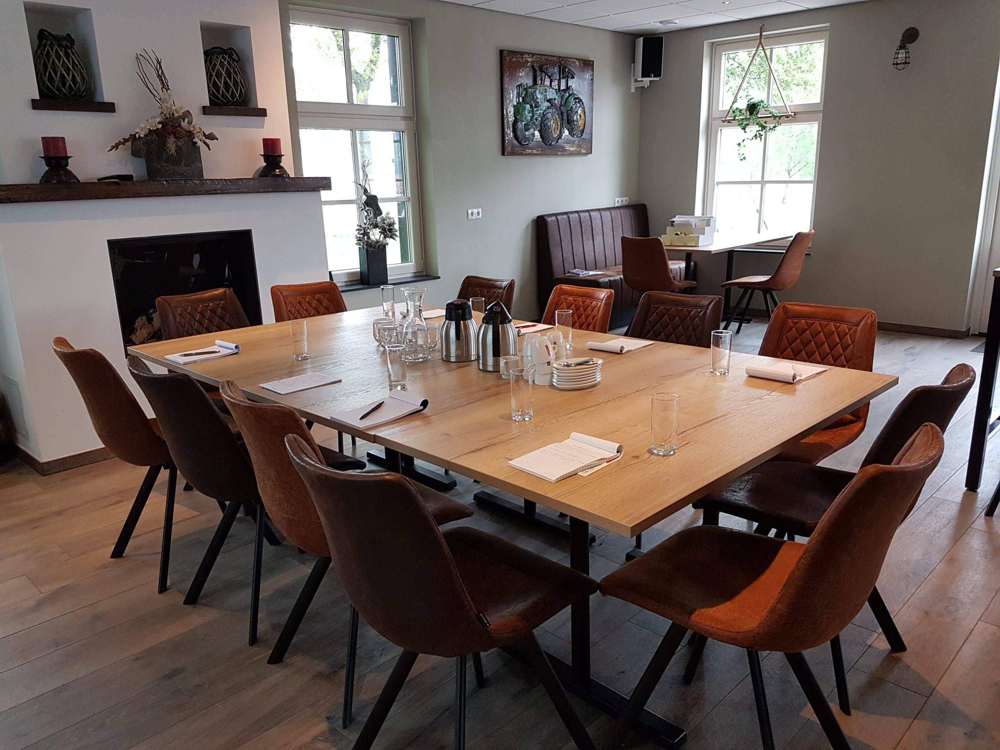
Bijeenkomsten & vergaderen
Onze locatie is heel geschikt voor vergaderingen, informatieavonden en reünies. Informeer gerust naar de mogelijkheden.
- Zaalhuur
- Beamer met scherm (1 HDMI/VGA-poort)
- Wifi
- Gratis parkeren
- Onbeperkt koffie, thee en water
Op maandag tot en met donderdag zijn we in principe gesloten, maar voor vergaderingen, bijeenkomsten of arrangementen denken we graag met u mee.
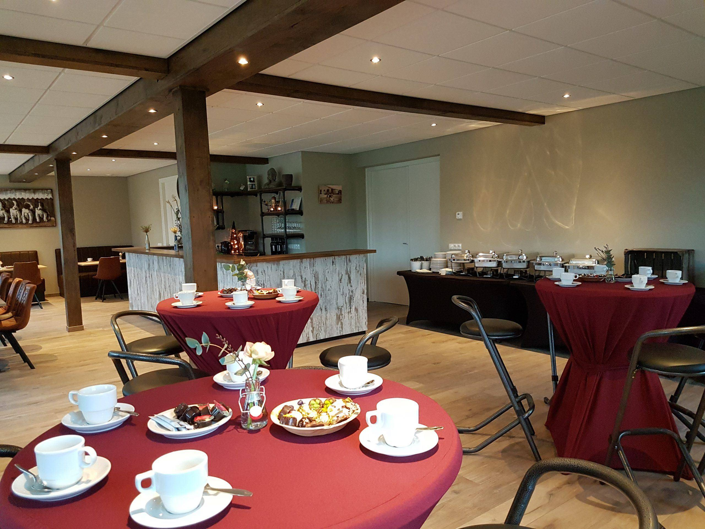
Wandelen & fietsen
D'n Eigenwijze ligt op 200 meter van de Landschotse Heide. Parkeer uw auto bij ons, volg de weg richting de bossen en u staat binnen 200 meter bij het informatiebord.
Wandelen
Het Brabants Landschap heeft twee wandelroutes door de Landschotse Heide uitgezet. U loopt ze in ongeveer een half uur tot anderhalf uur, en u kunt starten bij d'n Eigenwijze.
- Route Blauw 6,5 km
- Route Rood 5,3 km
- Kunstroute Dal van de Kleine Beerze
Fietsen
We liggen op slechts 200 meter van knooppunt 31 van het fietsroutenetwerk Eersel. Dat hoort bij de route Maak kennis met De Kempen (88 km), te combineren met de Fietsroute richting Oirschot (66,7 km).
Een eigen route samenstellen kan op de site van VisitBrabant (kies in ieder geval knooppunt 31) of met apps als Fietsknoop, Komoot en Fietsnetwerk. Fietsen stalt u bij de staminee.
31 het dichtstbijzijnde knooppunt
Bezienswaardigheden
Landschotse Heide
Schijnboten en oefenbommen Westelbeers · Uitkijktoren Landschotse Heide
Vessem
Monument Lancaster ND762 · Jacobusmolen · Jacobushoeve · Sint Lambertuskerk · Pelgrimshoeve Kafarnaüm
Oost-, West- & Middelbeers
Duitse observatiebunker schijnboten · Mariakapel Westelbeers · 'Het Oude Kerkje' · Sint-Willibrorduskerk · Oude Toren Oostelbeers
Ons verhaal
Van melkveebedrijf naar staminee: een plek die grotendeels met eigen handen is gebouwd.
- 1969
In het kader van de ruilverkaveling krijgt de familie Schoenmakers een perceel aan de Keijenhurkseweg 1. Ze bouwen een woonhuis en twee stallen voor koeien en varkens. De broers Piet en Bert runnen het bedrijf, samen met Berts vrouw Miet.
- 1973
Na het overlijden van Piet zetten Bert en Miet het bedrijf voort, met hulp van dochter José en zoon Martien.
- 1990
Martien overlijdt onverwachts. José kiest ervoor om toch door te gaan met het agrarische bedrijf.
- 1994
Het melkbedrijf wordt overgedragen aan José en haar man Erik, die het runnen tot 2002. Daarna slaan ze een ander pad in.
- 2015
De oude varkensstal is in verval geraakt. Een groot deel wordt afgebroken, om plaats te maken voor een nieuwe plek die iets bijdraagt aan de omgeving, waar natuur en recreatie een steeds grotere rol spelen.
- 2016
De wederopbouw begint: de stal wordt een horecaruimte met opslag, en ook de hooimijt wordt opgebouwd. De verbouwing duurt iets meer dan twee jaar.
- 2019
Kunstmestsilo en mestbassin maken plaats voor grasvelden, met vrij uitzicht op de Stroomkesberg en het bos. En hondje Freek komt het gezin versterken.
- 2020
In het voorjaar gaan de deuren eindelijk open en ontvangen we onze eerste gasten.
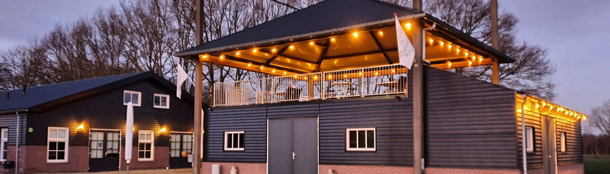
Waarom d'n Eigenwijze?
De naam heeft twee raakvlakken met ons verhaal. De plek is grotendeels ontstaan door de vele uren die we er zelf in hebben gestoken: hij is op onze eigen wijze tot stand gekomen.
En iedereen is op zijn eigen manier eigenwijs. Toen de familie Schoenmakers nog het agrarisch bedrijf runde, had Bert zelfs de bijnaam 'de eigenwijze'.
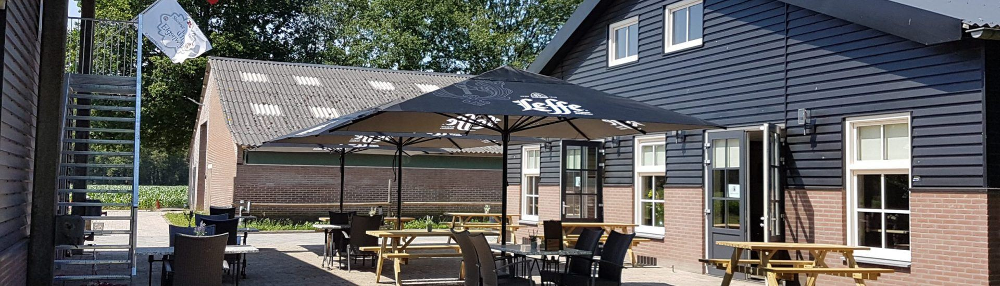
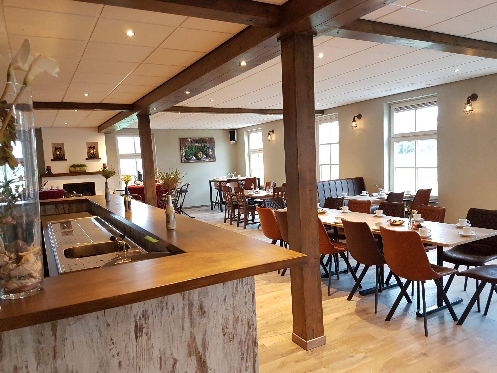
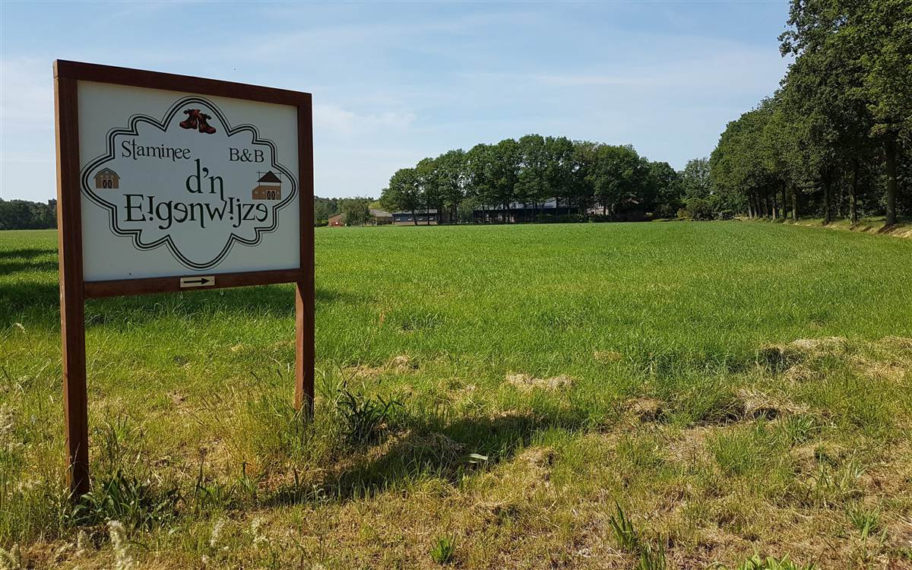
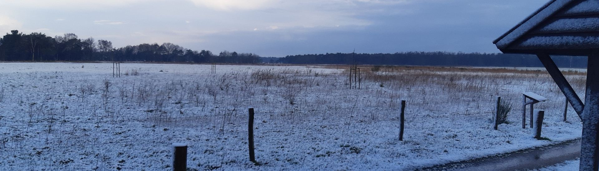
Kom langs
Staminee d'n Eigenwijze
Keijenhurkseweg 1
5512 NP Vessem
06 20 06 47 92
info@deneigenwijze.nl
Openingstijden
| Vrijdag | 10:00 – 17:00 |
|---|---|
| Zaterdag | 10:00 – 18:00 |
| Zondag | 09:00 – 18:00 |
| Maandag | Gesloten |
| Dinsdag | Gesloten |
| Woensdag | Gesloten |
| Donderdag | Gesloten |
Op andere dagen zijn we in principe gesloten, maar voor vergaderingen, bijeenkomsten of arrangementen denken we graag mee. Tijdens feestdagen of speciale evenementen kunnen de tijden afwijken; het actuele nieuws delen we op Facebook.
Parkeren
Rijdt u de Keijenhurkseweg in vanaf de Stroomkesberg, neem dan de derde inrit aan uw linkerkant: die met het bord met ons logo. Daar kunt u uw auto parkeren. Neem vervolgens het pad aan het einde van de stal links naar de staminee. Fietsers stallen hun fiets bij de staminee.